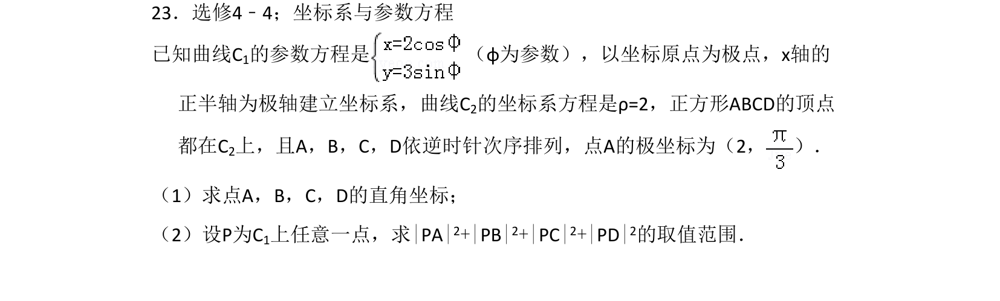
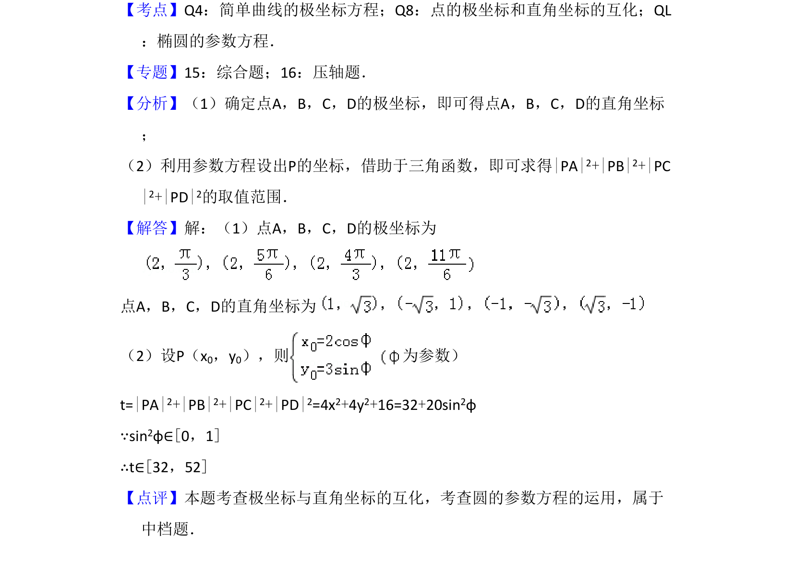

考点：极坐标与直角坐标互化 椭圆参数方程 距离平方和取值范围

本题考查极坐标与直角坐标的互化，以及椭圆的参数方程在最值问题中的应用。

📄 原 PDF 第 20 页：
素材/真题/吉林/2008-2024·（吉林）数学高考真题/2012年高考数学试卷（文）（新课标）（解析卷）.pdf
23．选修4﹣4；坐标系与参数方程 已知曲线C1的参数方程是 （φ为参数），以坐标原点为极点，x轴的 正半轴为极轴建立坐标系，曲线C2的坐标系方程是ρ=2，正方形ABCD的顶点 都在C2上，且A，B，C，D依逆时针次序排列，点A的极坐标为（2， ）． （1）求点A，B，C，D的直角坐标； （2）设P为C1上任意一点，求|PA|2+|PB|2+|PC|2+|PD|2的取值范围．
【考点】Q4：简单曲线的极坐标方程；Q8：点的极坐标和直角坐标的互化；QL ：椭圆的参数方程．菁优网版权所有 【专题】15：综合题；16：压轴题． 【分析】（1）确定点A，B，C，D的极坐标，即可得点A，B，C，D的直角坐标 ； （2）利用参数方程设出P的坐标，借助于三角函数，即可求得|PA|2+|PB|2+|PC |2+|PD|2的取值范围． 【解答】解：（1）点A，B，C，D的极坐标为 点A，B，C，D的直角坐标为 （2）设P（x0，y0），则 为参数） t=|PA|2+|PB|2+|PC|2+|PD|2=4x2+4y2+16=32+20sin2φ ∵sin2φ∈[0，1] ∴t∈[32，52] 【点评】本题考查极坐标与直角坐标的互化，考查圆的参数方程的运用，属于 中档题．